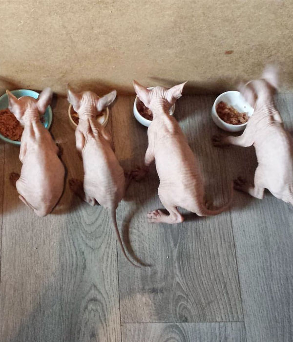
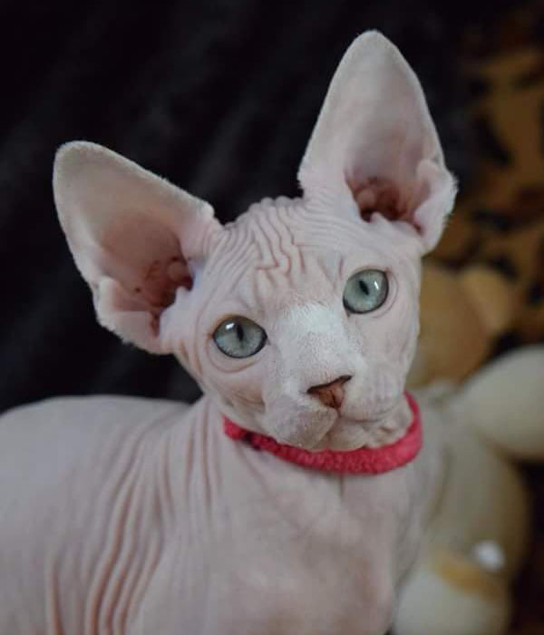
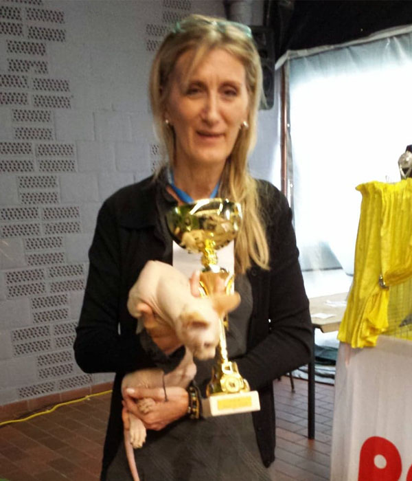

La chatterie
Tout à commencé il y a un peu plus de 7ans avec l'achat d'un chat . Pas n'importe lequel celui qui deviendra champion du monde grâce à des centaines d'heures en concours et des milliers de kilomètres parcourus ; 20 certificats d'aptitudes délivrés par 20 juges différents pour en arrivé au titre de champion du monde .
Mais avant tous cela il était juste question d'un caprice de petite fille ; étant allergique au poils de chat mais voulant faire comme les autres nous nous sommes tournées vers cette race qui nous était totalement inconnues sous les conseils bien avisé d'une amie ayant beaucoup d'expérience dans le domaine de la felinophilie nous avons adopté Nero qui s est avéré être une véritable graine de champion selon la juge et a décroché un Suprême of suprême (récompense ultime de l expo) déjà à l'age de 5 mois c'était le début de notre histoire d'amour pour cette race hors du commun .
Très vite l'envie est venue de faire de l'élevage nous avons décidé d'adopter une femelle c'était le début d'une passion mère /fille pour faire un élevage idyllique ou les bébé serait mis au monde dans une nurserie équiper de cage d'accouchement de couverture chauffante ; aurait une salle de jeux adaptée au fur et a mesure de leur sevrage et dans le respect dans chats.
C'est ce que nous prônons;une chatterie familiale avec des valeurs ;beaucoup de temps consacré a leur bien être et beaucoup d'amour.
De la naissance à l'adoption
Après deux mois de gestation voilà le moment tant attendus !
Pour nous cela fais trois jours que tout est prêt (couverture chauffante ; table a langer pour couper les cordons ; le ravitaillement en sucre et énergie pour la maman sous forme gel a avaler et j'en passe...) et que nous guettons le moindre signe de top départ.
La maman quand a elle est souvent paisible ,le calme avant la tempête .
Après quelques heures de travail acharné les premiers contacts avec la maman sont magiques .

Les chatons sourd et aveugle pendant les premiers jours de vie vont découvrir leurs environnements a tâtons sous la surveillance de leur maman .
Pendant prés d'un mois les chatons vont continuer a être allaité avec quelques supplément de biberon pour les plus mince de la porté .
et puis tout doucement l'alimentation « solide » va être ajoutée pour commencer le sevrage alimentaire . Et a ce moment la discipline va être de rigueur chacun son assiette pour éviter les disputes .

Et comme la pâté c'est collant un bain n'est pas de trop !
tout ce petit monde va évoluer pendant encore 3 mois sous la coupe de la maman qui va leur apprendre a être de vrais petits chats et a 4 mois environs ils seront sevré au niveau alimentaire et psychologique et prêt a rejoindre leurs nouvelles famille.
La race
Caractère du sphynx
Le sphynx est extrême dans son genre ; presque humain !
En effet, son physique hors du commun interpelle d'abord et attire ensuite ; au point que son caractère enjoué fait fondre les plus sceptiques.
Les sphynx sont incontestablement les chats les plus pots de colle qui existent sur Terre, aussi bien avec les gens qu'avec les autres animaux ; ils sont très sensibles à l'affection qu'on leur porte et supportent assez mal une trop longue solitude.
Pas de ces chats qui n’arrivent que lorsqu’on sort la gamelle avec la pâté ; le sphynx vous harcèlera pour être dorloté, caressé ou simplement près de vous a vous observer.
Vous l'avez compris : la compagnie de l'homme est essentielle pour les sphynx !!!!
C’est un grand séducteur !! Pas timide ni farouche, qui n'hésitera pas a venir voir vos visiteurs et à se faire caresser.
Ils ont une telle expression dans les gestes, une élégance et des attitudes que l’on ne retrouve pas chez les autres chats !
Ils préfèrent la vie d’intérieur et aiment être bien au chaud.
Ils iront volontiers dormir près d’un radiateur, sur une télévision ou n’importe quelle source de chaleur ;et lorsqu’ils sont plusieurs ils dorment collés les uns aux autres en une grosse pelote ronronnante.
Son look
Le Sphynx est un chat de taille moyenne. La tête, au crâne large et aux contours arrondis, présente des pommettes hautes et un pinch (cassure clairement visible à la base de museau ) prononcé.
Elle porte d’immenses oreilles très ouvertes et attachées bas.

De profil, le crâne est assez plat, prolongé par un front légèrement bombé et par une légère cassure au niveau du nez. En forme de citron, les yeux sont grands et expressifs.
L’encolure arquée dégage bien la tête et les épaules.
Le corps est ferme avec une musculature ronde, une poitrine ouverte comme celle d’un bouledogue. Les pattes sont fines. La queue est longue et effilée.
La peau du Sphynx va de la nudité complète à un fin duvet ressemblant à de la peau de pêche. Les chatons sont très ridés et les adultes doivent garder le plus de plis possible sans que cela n’affecte leur santé. Toutes les couleurs sont acceptées.
Voir
fiche LOOF

L'origine de la race
L’origine du chat Sphynx remonte très loin, mais son histoire récente remonte elle à 1966 au Canada ou une chatte de gouttière donna naissance à plusieurs petits chatons nus. Ramenés au Pays-Bas, ils furent croisés avec d’autres races puis une portée est importée en France en 1983. Une autre portée arrive en France depuis les Pays-Bas en 1985 en servant de base au standard de la race avec LOOF.
Dès lors le Sphynx est considéré comme race d’origine française. Pour d’autres, les origines de la race du Sphynx remonterait à des années lumières au Mexique. Certaines fresques murales évoquent la présence d’un chat nu. Les Aztèque déjà vénéraient ces chats sans poils. L’on trouve également dès 1830, des chats nus dans l’histoire du Paraguay.
Toutefois, depuis les temps modernes, c’est bien au Canada que l’on a préservé la race du Sphynx et ramené de Toronto aux Pays-Bas. Il n’existe que très peu d’éleveurs de la race Sphynx, ce qui en fait un chat rare et cher à l’achat.
La santé du sphynx
Afin de pallier son manque de poils, la peau du chat Sphynx est plus épaisse que celle des autres races de chats. De plus, on retrouve sous sa peau une généreuse couche de graisse qui le garde au chaud. Bien qu'épaisse, sa peau laisse souvent transparaître ses veine palpitantes. La peau du chat Sphynx respire, se salit, bronze et réagit comme la peau humaine. Ainsi, en été, il transpire pour évacuer la chaleur et peut attraper des coups de soleil.
Qu'est-ce que c'est?
*L'absence de fourrure chez le chat Sphynx ne représente en aucun cas une tare génétique ou une maladie. Ce phénomène, qu'on appelle alopécie héréditaire, est dû à un gène qui a muté spontanément et de manière naturelle, et non à une manipulation génétique ou à un problème de santé.
Au niveau des maladies à surveiller, la cardiomyopathie hypertrophique féline (hcm) est la principale chez le sphynx , comme pour 70% des chats de race.
Contrairement aux légendes urbaines , l'HCM n'est pas l'apanage du sphynx .
De ce fait, nous effectuons un suivi échographique tout particulier de nos reproducteurs que nous nous emmenons au CHU auprès du Dr Merveille (imminent cardiologue) et tout nos chats et nos chatons sont suivis par notre vétérinaire efficace et réactive le Dr Pascale DICKENSCHEID.
La Cardiomyopathie Hypertrophique est caractérisée par un épaississement plus ou moins important de certaines parois du muscle cardiaque, appelé hypertrophie. La distribution de cet épaississement est variable d'un chat à l'autre. Cette hypertrophie touche principalement le septum interventriculaire (paroi entre le ventricule droit et le ventricule gauche) et la paroi postérieure libre du ventricule (paroi externe du ventricule gauche), l’hypertrophie du côté droit n’est que très rarement rencontrée.
Les muscles papillaires peuvent également être hypertrophiés.
La CMH est la conséquence de la survenue d'anomalies sur les chromosomes responsables de la fabrication des différentes protéines constituant le muscle cardiaque.
Sa transmission reste très difficile à anticiper pour les éleveurs car le gène responsable de la maladie est dominant à pénétrance incomplète. ''Dominant'' c'est à dire que si l'un des deux parents est porteur du gène malade alors il le transmettra à sa descendance MAIS (c'est là que cela devient assez complexe) ''à pénétrance incomplète'' signifie que le chat peut être porteur sans déclarer la maladie mais pourra le transmettre à sa descendance donc la transmission peu sauter une ou plusieurs génération(s).